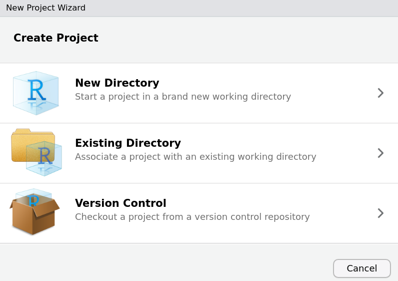
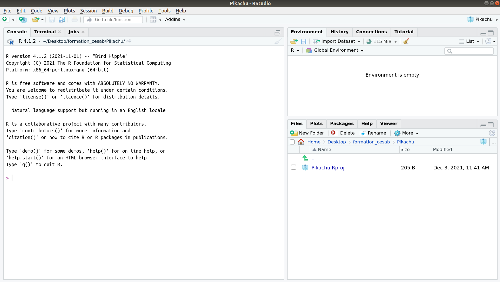

3) Create a research compendium
A research compendium is a folder providing data, code, and documentation, i.e. all you need to get a reproducing a scientific workflow ! To create this amazing tool, open RStudio and create a new R-Project : File > New Project…

Choose New Directory and then New Project.
 A new R-Project is create, it looks like this :
A new R-Project is create, it looks like this :

Now go in the R console and do:
rrtools::use_compendium("../Pickachu/", open = FALSE).
This function will create a compendium inside your project. By doing so you will create 4 new documents: 2 visible: DESCRIPTION and NAMESPACE and 2 invisible: .Rhistory, .Rbuildignore. DESCRIPTION is an important file because it will save all the packages version you will use during your study in order that other will reproduce your work easily.
Figure 2: Your are doing a great job - Pokepedia